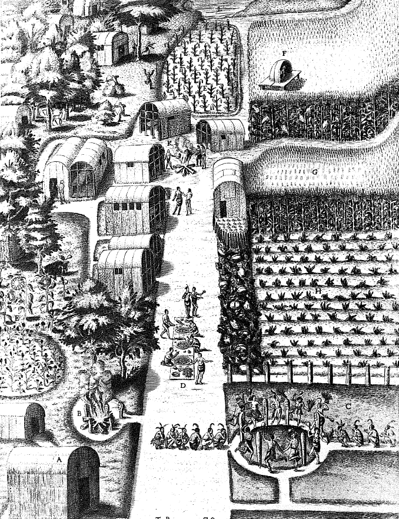

Düşünüp, Amerika'da ancak ilkel ve genel olarak vasat kültürlere temel olmuş olan manyoku dahil etmekten vazgeçtikten sonra, egemen bitkilerin incelenmesini heyecan verici bir bitki ile tamamlıyoruz. Mısır, manyokun tersine, İnkaların, Mayaların ve Azteklerin bu tamamen yerine özgü yaratıların uygarlıklarını veya yarı-uygarlıklarını; bunların parlaklığını zayıflatmadan desteklemiştir. Daha sonra dünya ölçeğinde çok özel bir başarı kazanmıştır.
Mısır örneğinde her şey, hatta kökenleri sorunu bile basittir. XVIII. yüzyıl bilginleri, tartışmalı okumaların ve yorumların devamında, mısırın hem Uzakdoğu'dan -gene o- ve hem de Avrupalıların Colombus'un daha ilk yolculuğunda onu buldukları Amerika'dan geldiğini sanmışlardır. İlk açıklamanın kötü olduğu kesinlikle bellidir: mısır Asya ve Afrika'ya yalnızca Amerika'dan gelmiştir ve Afrika'daki bazı kalıntılar, hatta bazı Yoruba yontuları kafamızı hâlâ karıştırabilmektedirler. Bu konuda son söz arkeolojinin olmalıdır ve olmuştur. Eski tabakalarda mısır başağı muhafaza edilemiyorsa da, fosilleşebilen polleni için durum aynı değildir. Böylece fosilleşmiş mısır polleninden, derin sondajların yapıldığı Mexico civarında bulunmuştur. Kent eskiden, kurutulmuş bir lagünün kenarındaydı, bunun sonucunda bir toprak yığılması ve önemli çöküntüler meydana gelmiştir. Kentin eski bataklık topraklarındaki sondajlar artırılmış ve 50 ve 60 m. derinliklerinde mısır tanesi pollenleri bulunmuştur; yani binlerce yıl geriye ait olmak üzere. Bu pollen bazen bugün de yetiştirilen mısır cinsine veya bazen de yabani olanına ait olmaktadır, ama en azından iki tür söz konusudur.
Fakat sorun, Mexico'nun 200 km. güneyindeki Tehuacan vadisinde, yakınlara yapılan kazılar tarafından aydınlatılmıştır. Her kış muazzam bir çöl haline dönşen bu alan, kuraklığından ötürü eski mısır tanelerini, başaklarını (yalnızca eksenleri haline dönüşmüş olarak), çiğnenmiş yaprakları muhafaza etmiştir. Bitkiler, insanlar, insani kalıntılar, yeraltı su pınarlarının yakınlarında bulunmaktadır. Mağara altındaki sığınaklar, kazı yapanlara önemli miktarda malzeme ve bu arada, mısırın geriye doğru tarihini sağlamışlardır.
“En eski tabakalarda, tüm modern unsurların birer birer kayboldukları görülmektedir... En eski tabakada, bundan 7-8 bin yıl öncesine ait ilkel bir mısır, tek başına yer almaktadır ve her şey bunun henüz ekilmediğini göstermektedir. Bu yabani mısır küçük bir bitkidir. 50 kadar tane taşıyan yan yaprağın kenarına yapışmış olgunlaşmış başağı 2-3 cm. uzunluğa ulaşabilmektedir. Başağın ekseni çok narindir ve onu çevreleyen yapraklar, tanelerin kolayca dağılabileceği dayanıklı bir km meydana getirmemektedirler. Yabani mısır; taneleri ancak olgunlukta açılan yaprakların esiri olan ekilen mısırın tersine, hayatta kalmayı böyle sağlayabilmektedir. İnsanın müdahale etmesi gerekmektedir.
Tabii ki sır tamamen çözülmemiştir. Bu yabani mısır neden yok olmuştur? Bu konuda, Avrupalıların getirdikleri sürüler, özellikle de keçiler suçlanabilir. Sonra, bu yabani mısırın ana vatanı neresidir? Amerikalı olduğu kabul edilmiştir, ama insan tarafından harika bir şekilde dönüştürülen bu bitkinin Yeni Dünya'daki kesin vatanını saptamak için tartışmak ve araştırmak gerekecektir. Dün Paraguay, Peru ve Guatemala'nın adaylıkları konulmaktaydı. Meksika bugün onlara fark atmış durumdadır. Fakat arkeolojinin de sürprizleri ve heyecanlı anları vardır. Ve uzmanlar sanki bu heyecan verici sorunlar nihai çözümden mahrum kalmalıymış gibi, hâlâ dünyanın tüm tahıllarının beşiği olan Asya'dan veya Birmanya'dan itibaren, mısırın ilkel yayılmasının tamamlayıcı bir merkezi olduğundan söz etmekte, en azından bunun hayalini kurmaktadırlar.
Her halükârda XV. yüzyıldan itibaren, Aztek ve İnka imparatorlukları kendilerini kanıtlamayı tamamladıkları anda, mısır Güney Amerika'nın doğusunda olduğu gibi, manyokla ortaklık halinde; veya tek başına ve kuru ekinler rejimine boyun eğmiş olarak; veya Peru'nun sulanan taraçaları ve Meksika gölleri sahillerinde tek başına, uzun zamandan beri Amerikan mekânında mevcut durumdadır. Pirince ilişkin olarak, kuru tarım hakkında, ladang veya ray hakkında söylediklerimiz bize sözü kısa kesme olanağını vermektedir. Mısırın kuru toprakta veyahut orman veya çayırdan açılmış bir alandaki her yılki dönüşümünü hayal etmek için, Meksika'daki Anahuac yaylasındaki büyük çayır yangınlarını, sıcak hava delikleri yüzünden uçakların etkileyici düşüşlere maruz kaldıkları (bu yüksek toprakların yalnızca 600-1000 m. üstünde uçmaktadırlar) muazzam duman kitlelerini görmüş olmak gerekir. Bu milpa rejimidir. Gemelli Careri bunu, Mexico'dan birkaç adım ötedeki Cuernavaca yakınlarındaki dağlarda fark etmiştir: “yalnızca çok kurumuş otlar vardı, öylesine ki, köylüler toprağı gübrelemek için bunları yaktılar” diye kaydetmiştir.
Yoğun mısır ekimine Meksika göllerinin kıyısında ve bundan da seyirlik olarak, Peru'nun taraçalı ekim alanlarında rastlanmaktadır. Titicaca gölünün yükseltilerinden gelmiş olan İnkalar, And vadisinden aşağı inerlerken, artan nüfus için toprak bulmak zorunda kalmışlardır. Dağ basamaklar halinde kesilmiş, birbirlerine merdivenlerle bağlanmış ve özellikle de, bir kanal ağıyla sulanmıştır. Bu tarım hakkında, resimli belgeler tek başlarına çok şey anlatırlar: işte sopasıyla delik açan köylü ve tohumları bırakan karısı; işte çabucak olgunlaşan ve kuşlara -Allah bilir ya, çok kalabalıktırlar- ve herhalde bir lama olan ve bir başağı yemekte olan bir hayvana karşı korunması gereken ürünler. Bir imge daha ve işte hasat geldi bile... Hasatta başaklar ve sapları (şekerden yana zengin olan bu sap değerli bir besindir) sökülmektedir. Poma de Ayala'nın bu saf resimleriyle, 1959'da Yukarı Peru'da çekilmiş resimleri karşılaştırmak belirleyici olmaktadır. Bu fotoğraflarda da aynı köylüyü, kocaman sopasını güçlü bir hareketle toprağa batırıp, büyük toprak parçalarını kaldırırken ve karısını da, tıpkı eskiden olduğu gibi, tohumu bırakırken görmekteyiz. Coreal XVII. yüzyılda Florida'da, yerlilerin anız yaktıklarını ve yılda iki kere, Mart ve Temmuzda tohumları gömmek üzere “sivri uçlu sopalarını” kullandıklarını gömüştür.
Mısır hiç kuşkusuz mucizevi bir bitkidir: çabucak oluşmakta ve taneleri daha olgunlaşmadan önce de yenilebilir hale gelmektedirler. Atılan tohum başına hasat, koloni Meksika'sının kuru bölgesinde 70-80'dir; Michoacan'da 1'e 150 düşük sayılmaktadır. Queretaro'da çok iyi topraklarda l'e 800'lük rekorlar işaret edilmektedir ki, bunlara inanmaya ancak cüret edilebilir. Hatta gene Meksika'da, sıcak veya ılıman topraklarda iki ürün alındığı da olmaktadır; bunlardan biri riego (sulama ile), diğeri temporal (yağmur sayesinde) olmaktadır. Sömürge zamanında küçük mülklerde bugünkünün aynı, yani hektara 5-6 kental verimler düşünelim. Bunlar kolayca elde edilmektedir, çünkü mısır tarımı hiçbir zaman fazla çaba gerektirmemiştir. Bu gerçeklere karşı dikkatli bir arkeolog olan Fernando Marquez Miranda, dün mısır yetiştiren köylünün avantajlarını işaret etmiştir: bu tarım köylülerden yılda yalnızca 50 iş günü talep etmektedir, mevsimine göre, yedi veya sekiz günde bir çalışma. İşte köylüler serbesttirler, çok serbesttirler. Andların sulanan taraçalarındaki veya Meksika yaylalarının göl kenarlarındaki mısır teokratik, ölçüsüz derecede tiranik devletlere ulaşmaktadır (acaba bu onun hatası mıdır, yoksa sulamanın mı, yoksa bizatihi sayılarından ötürü fiilen baskıcı olan yoğun toplumların mıdır?) ve kır insanlarının bütün boş zamanları Mısır tarzındaki devasa çalışmalar için kullanılacaktır. Mısır olmasaydı Mayaların veya Azteklerin dev piramidleri, Cuzco'nun Kyklop tarzı surları veya Machu Pichu'nun etkileyici harikalarının hiçbiri mümkün olamazdı. Bunların inşa edilebilmesi için mısırın kendi kendini tek başına, veya hemen hemen tek başına oluşturması gerekmiştir.
Sorun tam da budur: bir yanda bir harika, öte yanda sefil insani sonuçları ve her zamanki gibi kendimize soruyoruz: hata kimde? İnsanlarda tabii, ama mısırda da.
Bütün bu zahmet hangi ödül için? Mısır galetası, şu her gün yenilen kötü ekmek, şu ağır ateşte, toprak kaplarda pişirilen pastalar veya ateşte patlatılan taneler; bunların hiçbiri yeterli gıdalar değildir. Bunlara inatçı bir şekilde eksik olan et katkısı gerekmektedir. Bugünkü kızılderili bölgelerindeki mısır köylüsü, hâlâ çoğunlukta ve özellikle Andlar'da bir sefildir. Gıdası? Mısır, gene mısır ve kurutulmuş patates (bizim patatesin Peru kökenli olduğu bilinmektedir). Yemek, taştan bir ocak üzerinde, açıkta pişirilmektedir; basık kulübelerin tek odası insanlar ve hayvanlar tarafından paylaşılmaktadır; hiç değişmeyen elbiseler lama yününden, ilkel tezgâhlarda dokunmaktadır. Tek kaynak: açlığı, susuzluğu, üşümeyi, yorgunluğu yok eden koka yapraklarını çiğnemektir. Kaçış: filizlenmiş (veya çiğnenmiş) mısırdan, İspanyolların Antiller'de rastladıkları ve en azından adını bütün Amerikan kızılderili dünyasına yayacakları chicha’dan yapılan bira; veya Peru'nun daha sert olan birası sora içmek. Bunlar makul yöneticiler tarafından boşuna yasaklanan tehlikeli içkilerdir. Bu hüzünlü, narin halktan, Goya'nın sarhoşluk sahnelerinde olduğu gibi, şirazesinden çıkartmaktadırlar.

Kızılderililere ait mısır ekim alanı: Virginia'da Secola Kızılderili kampı. Bu kamp ormanın kıyısında, kulübeleri, avcıları, bayramları, tütün tarlaları (E) ve de Bry'nin “büyük kamışlarınkine benzeyen geniş yapraklarıyla" bitkinin Öneminden ötürü olduğunu açıkladığı üzere, aralıklı hatlar halinde mısır ekim alanlarıyla (H ve G) yer almaktadır.
Vahim bir kusur olarak, mısır her zaman elin ulaşabileceği yerde değildir. Andlarda, soğuktan ötürü, bayırın ortasında durmaktadır. Başka yerlerde dar bölgeleri işgal etmektedir. Demek ki, tahılın ucu ucuna tedavül etmesi gerekmektedir. Bugün bile, Potosi'nin güneyindeki Yura kızılderililerinin dramatik transhümansı onların 4.000 m. yükseklikteki insanlık dışı yükseltilerden, mısır alanlarına üşüşmelerine yol açmaktadır. Tıpkı taş ocakları gibi işlettikleri, tanrının lütfü olan tuzlalar onlara para sağlamaktadır. Her yıl Mart ayında, en azından üç ay süren bir gidiş-geliş yolculuğuyla; erkek, kadın, çocuk, hepsi de yayan ve kamp kurdukları yerlerin yakınında sanki burç gibi yükselen tuz çuvallarıyla, bu insanlar mısır, koka ve alkol almaya gitmektedirler. Mısırın veya mısır ununun ezelden beri var olan dolaşımına dair küçük, vasat bir örnek.
XIX. yüzyılda Alexander von Humboldt Yeni İspanya'da, Auguste de Saint- Hilaire de Brezilya'da bu katır sırtında yapılan dolaşımı, molaları, ranchoları, durakları, zorunlu geçişleriyle kaydetmişlerdir. Her şey, hatta madenler bile, daha ilk kazma darbelerinden itibaren ona bağımlıdır. Zaten en çok kim kazanmaktadır, gümüş arayan madenciler mi, yoksa erzak satıcıları mı? Bu dolaşımda bir duraklama olursa, bunun sonuçları hemen, oluşmakta olan büyük tarihe ulaşmaktadırlar. XVII. yüzyılın başında, Arica'dan gelen, sonra da Callao menzili aracılığıyla buraya ulaşan Potosi madenleri gümüşünün vardığı Panama limanının genel kaptanı olan Rodrigo Vivero'nun tanık olarak aktardıkları budur. Daha sonra değerli yükler kıstaktan geçmekte ve Antiller Denizi'ndeki Porto Belo'ya katır kervanlarıyla, sonra da Chagres nehrinden kayıklarla ulaşmaktadır. Ama katırcılar ve kayıkçıların beslenmeleri gerekmektedir: bu olmazsa, taşıma da olmaz. Oysa Panama ancak ya Nikaragua ya da Caldera'dan (Şili) ithal ettiği mısır sayesinde yaşayabilmektedir. 1626'da kısır bir yıl esnasında, yalnızca Peru'dan gönderilen 2.000-3.000 fanegos (100-150 ton) mısır yüklü bir tekne durumu kurtarmış ve beyaz madenin kıstağın yüksek noktasından taşınmasını mümkün kılmıştır.